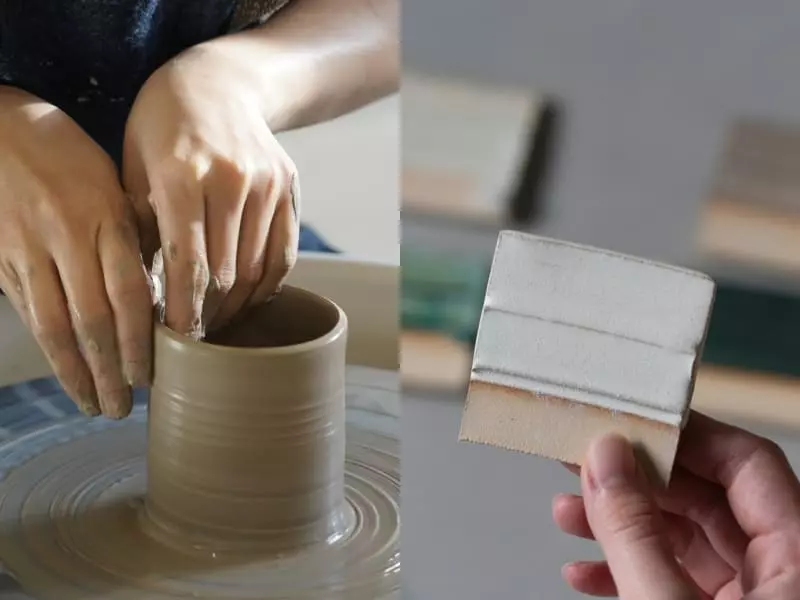
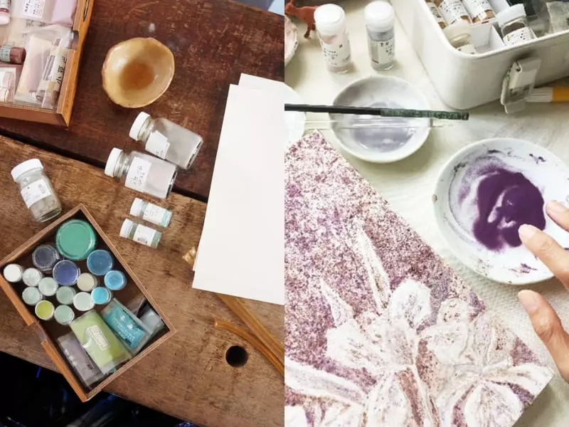
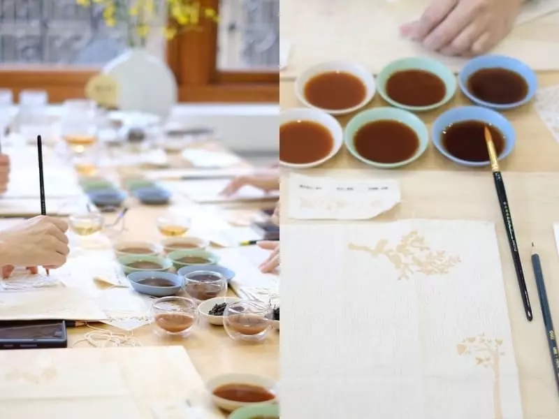
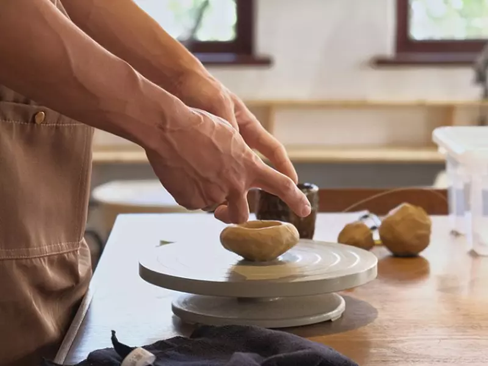
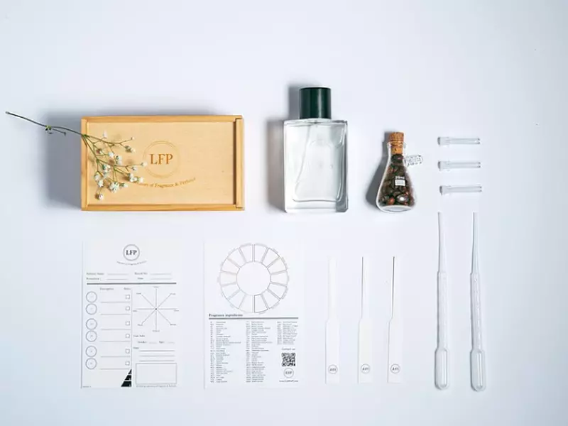

5 堂打造品味的手作體驗課程推薦，開啟你的美感練習計畫
*素材取自於pinkoi 僅用於專案製作*
Judy | 2023/05/27
美感需要練習嗎？我想答案是肯定的～美感並不是只能靠著與生俱來，後天的培養都能讓我們，更細膩、敏感地去留意生活之美，最後形成自己獨一無二的品味和風格。既然如此，該怎麼練習呢？編輯精挑細選了 5 堂手作體驗課程，在這個冬去春來的時刻，一起來嘗試以前從來沒有嘗試過的事物吧！
第 1 堂美感練習體驗｜愛的手拉坯器皿
手拉坏是一門由時間和耐心堆疊的技藝，你有多久沒有靜下心來感受全然的專注了呢？愛的手拉坯器皿課程以直筒杯或碗型器皿為製作主題，帶領你感受手與土共同旋轉的療癒。
值得一提的是，體驗地點所在的藝廊非常漂亮，純白的空間搭配陶器和木製家具點綴，呈現出 Wabi Sabi 的日式美學，藝廊不定期也有展覽，來體驗拉坏的時候記得不要錯過。
體驗費用 : NT$ 1,880 / 兩人同行優惠 NT$ 3,600（含燒窯費）
活動時間 : 2 小時
地址：台北市大安區敦化南路二段 63 巷 21 弄 27 號 1 樓
網友評價 :「老師教學很細心，環境地點都很方便，值得來體驗」
第 2 堂美感練習體驗｜土壤石頭畫畫課
你知道石頭和土壤可以拿來作畫嗎？平常不起眼的小石頭研磨後，竟然有著獨一無二的色彩，是最珍貴的自然繪具素材，包括土壤、天然岩、新岩、金屬箔、牡蠣也都是大自然贈送給我們的天然顏料。
就像料理自己種的蔬菜一樣，課程從研磨自己的顏料開始，在自由作畫的過程中更能感受到珍惜。不需要任何美術底子，不管大朋友、小朋友都很適合參加。
體驗費用 : NT$ 1,580
活動時間 : 3 小時
地址：台北市和平西路三段 51 巷 8 號 2 樓
網友評價 :「從礦物開始研磨，製作屬於自己獨一無二的顏料！真的是很特別的繪畫體驗！」
第 3 堂美感練習體驗｜茶染繪書衣
新竹東方美人、南投紅玉、台東紅烏龍茶，平平都是茶，三種茶的紅卻有著完全不一樣的層次。課程中會以茶作為顏料，打造屬於自己的書衣圖樣，設計師會提供多張圖片供選擇，不用擔心自己沒有想法。只要放鬆身心，一邊品嘗台灣的在地好茶，一邊感受茶顏料的色彩層次與文化，看看茶染繪怎麼應用在我們的生活日常中。
體驗費用 : NT$ 1,350
活動時間 : 2 小時
地址：小樹屋共享空間（詳細地點報名後會另行通知）
網友評價 :「超棒的體驗，能認識台灣的茶，還能留下實用的作品，特別的開心」
第 4 堂美感練習體驗｜手捏陶體驗工作坊
常常聽爸爸媽媽說起小時候捏泥巴的快樂和單純，總讓人有點羨慕那份純粹。如果你也想體會看看，手捏陶是最適合的替代方案，用感官去認識陶土，看看自己怎麼從無到有，用雙手把心中的想法具像化。每個人都可以選擇一款想做的陶器，做出一款可以在日後陪你長長久久使用的生活器皿，沒有捏陶經驗的人更是歡迎。
體驗費用 : NT$ 1,200（燒窯費另計）
活動時間 : 2.5 小時
地址：台中市中區仁愛街 13 巷 1 號
網友評價 :「陶器品質很好，工作室服務甚佳！」
第 5 堂美感練習體驗｜客製化香水調香課程
有人說，細膩的香味可以顯現一個人的品味和風格。專屬於自己的香水，就像擁有一張代表自己的名片，散發的香味來自你的記憶、生活經驗及個人特質。
體驗內容從認識香水出發，再到設計獨家配方、搭配香型，還能幫專屬香水命名。課程結束後會需要大約 30 個工作天製作，請耐心等待你的創作完成吧！
體驗費用 : NT$ 1,800（燒窯費另計）
活動時間 : 1 小時
台北地址：台北市信義區忠孝東路四段 553 巷 12 號
台中地址：台中市西區中興一巷 8 號 2 樓 K 戶
台南地址：台南市中西區信義街 112 號
網友評價 :「流暢且完整的SOP 清楚知道每一步怎麼做」、「調香課的講解員都很有耐心介紹每一個步驟和香味，不懂的也立刻會幫忙解答」